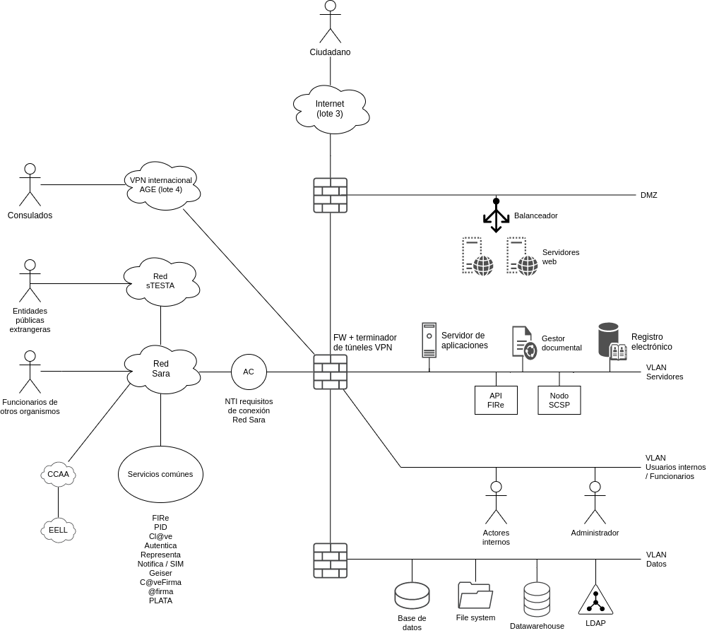
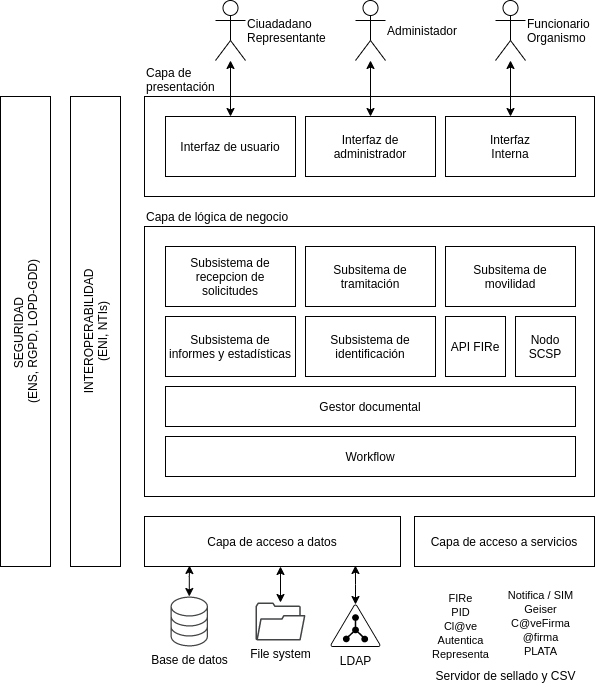

¿Cuando?
- Hay plazos
- Hay que responder y notificar
- Genera algún derecho
Mencionar
| Amb | Ley... | Art | Titulo |
|---|---|---|---|
| WEB | EU 2016/2102 | Accesibilidad de los sitios web y aplicaciones para dispositivos móviles de los organismos del sector público | |
| WEB | RD 1112/2018 | Accesibilidad de los sitios web y aplicaciones para dispositivos móviles del sector público (EN 301 549 V3.2.1) | |
| WEB | ISO 9241 | Recomendaciones sobre Usabilidad | |
| ENS | RD 3/2010 | Esquema Nacional de Seguridad en el ámbito de la Administración Electrónica | |
| ENI | RD 4/2010 | 10 | Activos semánticos |
| ENI | RD 4/2010 | 17 | Directorios de aplicaciones reutilizables |
| PAC | Ley 39/2015 | 9 | Sistemas de identificación de los interesados en el procedimiento |
| PAC | Ley 39/2015 | 12 | Asistencia en el uso de medios electrónicos a los interesados |
| PAC | Ley 39/2015 | 15 | Lengua de los procedimientos |
| PAC | Ley 39/2015 | 53 | Derechos del interesado en el procedimiento administrativo |
| RJSP | Ley 40/2015 | 157 | Reutilización de sistemas y aplicaciones de propiedad de la Administración |
| RGPDw | EU 2016/679w | 35 | Evaluación de impacto relativa a la protección de datos |
| LOPD-GDD | LO 3/2018w | Protección de Datos Personales y garantía de los derechos digitales |
Servicios comunes
| SC | Propósito |
|---|---|
| Cl@ve | autenticar ciudadanos |
| Autentica | autenticar funcionarios |
| Representa | funcionarios habilitados (Habilita) y apoderamientos (Apodera) |
| Notifica | enviar notificaciones y comunicaciones |
| SIM | enviar avisos (SMS, push, etc) |
| Geiser | registro electrónico |
| Geiser+SIR | derivar a otro organismo |
| PLATA | multilingüismo |
| PID | consultar datos en otros organismos |
| FIRE | firmar |
| Acceda | implementar e-sede / tramitación de expedientes / workflows pequeños / generación de formularios |
Usar Acceda en vez de implementar tu propia e-sede es un ejemplo de cumplir el Art 17 del ENI y el Art 157 Ley 40/2015, que implica haber consultado el CTT en busca de soluciones que podamos reutilizar.
Actores
- Ciudadano:
- Se identifica con Cl@ve (Art 9 Ley 39/2015)
- Funcionario habilitado:
- Se identifica con Autentica
- Se comprueba su habilitación en Representa/Habilita
- Recoge el consentimiento del ciudadano (Art 12 Ley 39/2015)
- Representante del ciudadano:
- Se identifica con Cl@ve (Art 9 Ley 39/2015)
- Se comprueba el apoderamiento con Representa/Apodera
- Funcionario:
- Se identifica con Autentica (desde Sara)
- Se identifica con LDAP (desde el propio organismo)
Si el ciudadano esta obligado a relacionarse eléctricamente con la AP no tiene derecho a funcionario habilitado.
Secuencia
Expediente administrativo
La idea básica es que un ciudadano realiza una solicitud, y esta inicia un expediente.

Arquitectura de red
Se puede preguntar bajo el nombre de:
- Arquitectura de red
- Arquitectura física
- Diagrama de despliegue
- Infraestructura
- Propuesta tecnología (incluye también arquitectura lógica)

El uso de lineas de defensa (FW) da cumplimiento al Art 4 y 8 del ENS (RD 3/2010).
Arquitectura lógica
Se puede preguntar bajo el nombre de:
- Arquitectura lógica
- Diagrama de paquetes
- Diagrama de componentes
- Propuesta tecnología (incluye también arquitectura de red)

Capa de presentación
- HTML + CSS3 + Javascripts:
- Aplicación web progresiva
- Diseño web responsive
- media-queries
- Cumplir accesibilidad:
- Directiva EU 2016/2102
- RD 1112/2018
- AA WCAG 2.1a = EN 301 549 V3.2.1
- Seguir recomendaciones de usabilidad:
- ISO 9241
- Multilingüismo (Art 15 Ley 39/2015):
Capa lógica
Capa de datos
- Filesystem
- LDAP
- Base de datos
- Cumplir Art 10 RD 4/2010:
- Buscar en CISE modelos de datos que podamos reutilizar
- NTI de Relación de modelo de datos
Capas transversales
- Seguridad:
- RGPDw (Reglamento (EU) 2016/679)
- ENS (ITS) (RD 3/2010)
- Guía CCN-STIC-812 (Seguridad en servicios web)
- Guía CCN-STIC-803 (Valoración de Sistemas en el ENS)
- Guía CCN-STIC-804 (Guía de implantación) + ENS Anexo II Medidas de seguridad
- Evaluación de impacto (Art 35 RGPD)
- Interoperabilidad:
- ENI (NTIs) (RD 4/2010)
- Acceso a servicios comunes a través de red Sara, vía Área de conexión (NTI Requisitos de conexión a la Red de comunicaciones de las AP)
- Mantenimiento:
- LOGs
- Ficheros para que explote un cuadro de mando externo